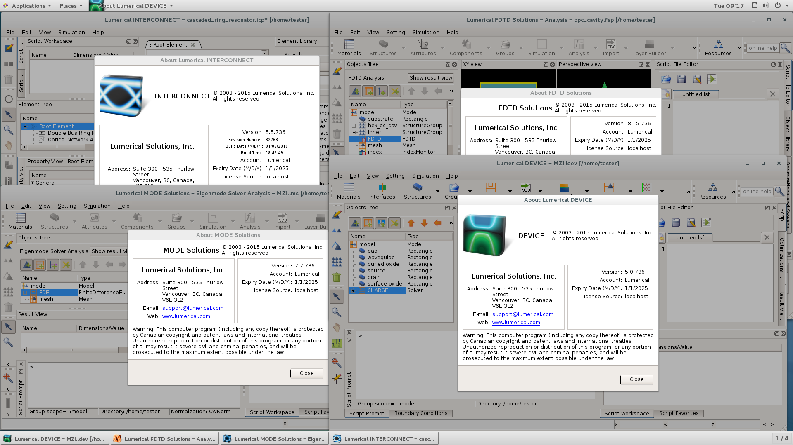
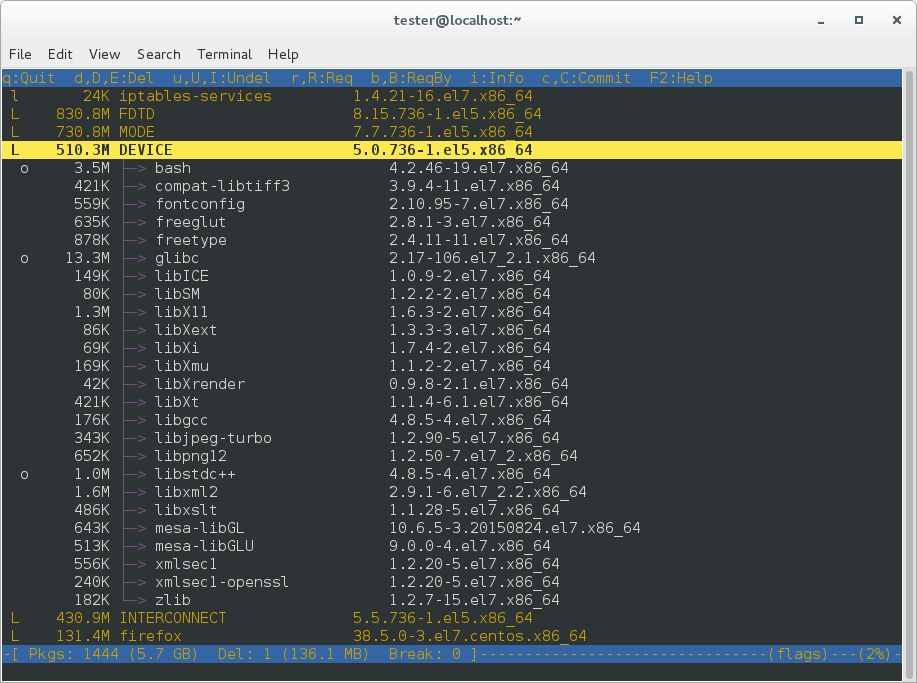
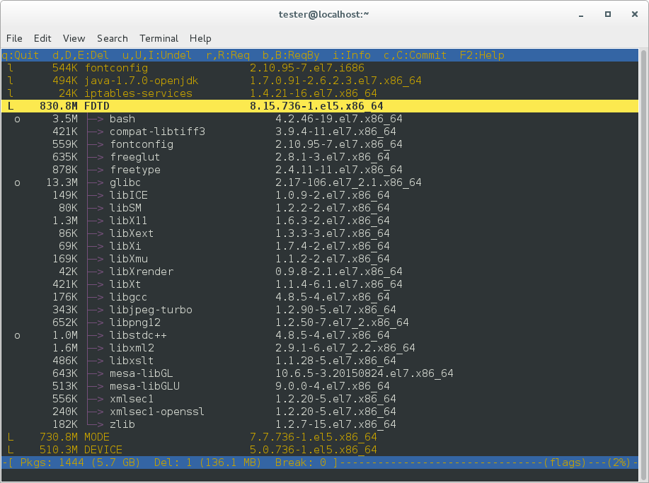
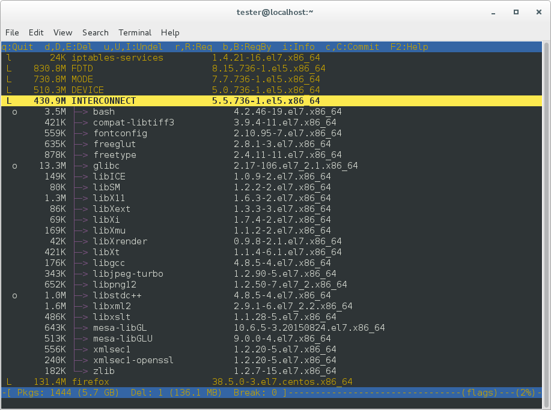
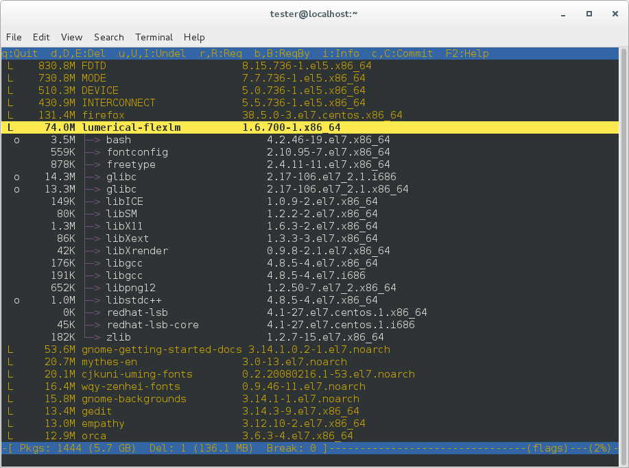

FDTD Cluster Usage
安装的版本为：Lumerical FDTD 2016a Build 736 Linux64 Tested on CentOS7 - Linux 3.10.0-1160.92.1.el7.x86_64
1. 安装
Step 0: uninstall old versions DEVICE, FDTD, INTERCONNECT MODE and Lumerical_FlexLM
Step 1: unpack and install the programs DEVICE, FDTD, INTERCONNECT MODE and Lumerical_FlexLM
Step 2: Stop service “Lumerical FlexNet License Manager”: run command from terminal console as root: # /etc/init.d/lumladmin stop
Step 3: Extract all files from archive “lumerical.2016a.build.736.linux.x64.patch.tar.gz” under programs directory and overwrite. Default programs directory is /opt/lumerical
Step 4: Start service “Lumerical FlexNet License Manager”, run command from terminal console as root: # /etc/init.d/lumladmin start
Example complete instalation procedure, see file
“lumerical_install_(screen_of_terminal).pdf”
Tested on CentOS7 - Linux 3.10.0-327.3.1.el7.x86_64
running on:
VMware Workstation 12.0.0 build-2985596




